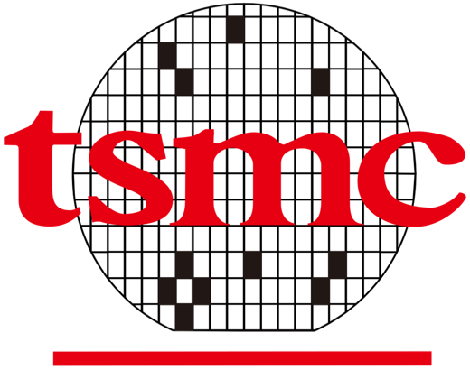
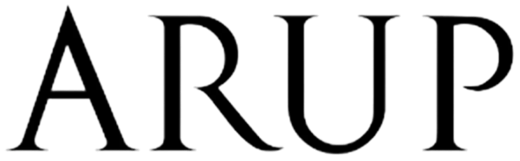
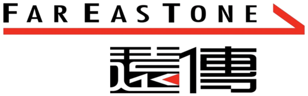
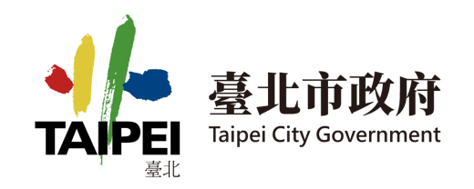

EXPERTS IN INTEGRATING MODELS AND DATA
Connecting the Future, Building Smarter Cities with Innovative Technology.
PARTNERS & CLIENTS
Trusted by airports, developers and public agencies.




POSITIONING
From Model
to Twin.
-
MODEL
Proprietary BIM Model Engine
Reduce 95% BIM size with 100% model fidelity — light enough to run on mobile and the web, so every stakeholder works on the same model in real time.
-
INTEGRATE
BIM + GIS + AIoT in one platform
Data from power, water, HVAC, lighting and safety systems flows into a single spatial model of the building and the city.
-
TWIN
A real-time twin that learns
Predictive maintenance, energy-efficiency strategies and automated risk alerts — clear, actionable intelligence for decision-makers.
BY THE NUMBERS
Built on our own engine, proven on real assets.
95%
BIM model size reduction, with 100% model fidelity.
25
Internationally renowned flagship clients & partners
50+
Proprietary patents in our active portfolio
15
Clients served continuously for over 3 years
—
Projects delivered — figure to be confirmed
PRODUCTS & SERVICES
One twin, four platforms.
- AirhubBIM + PLM Platform From early design and vendor contracts to construction and facility operations — every stakeholder collaborates on one platform.
- FMFacility Management Platform A 3D dashboard on top of SCADA — Siemens, Schneider, Honeywell — so managers spot issues fast and streamline inspections.
- EMSEnergy EMS & iEMS Platform Monitor and analyse energy use; the AI engine turns meter data into predictive usage and monthly reports.
- CIMSmart City IoT Platform A command centre for airports and city-scale assets — BIM, GIS and AIoT with high availability and ISO 19650-2 support.